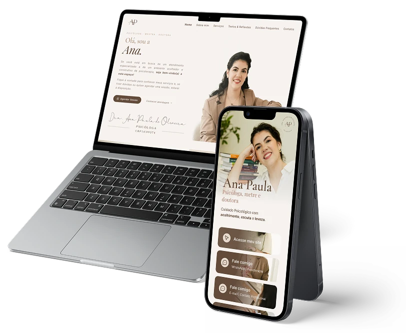
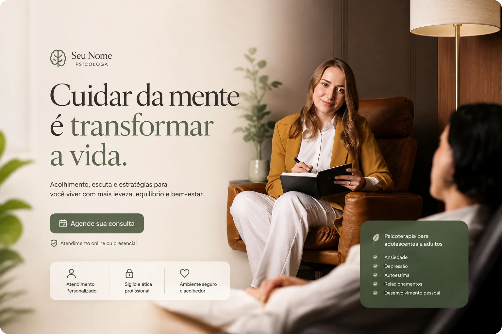
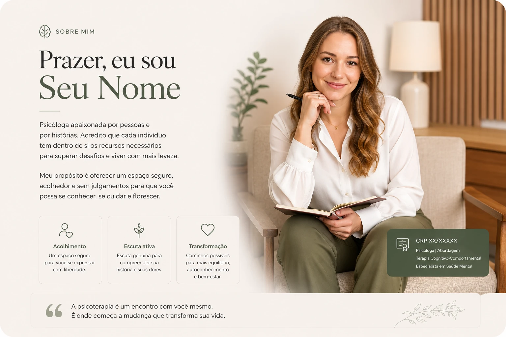
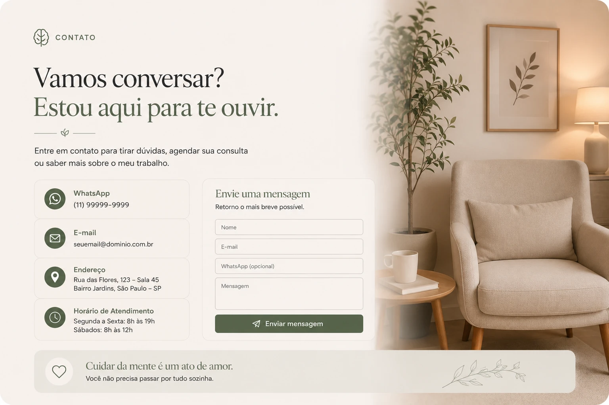
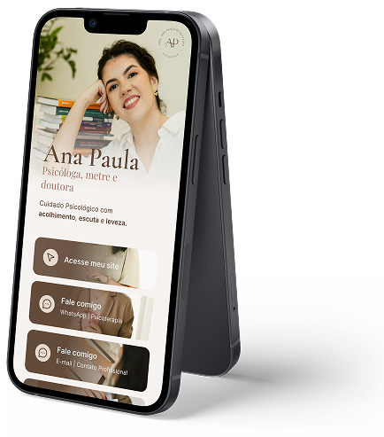

Mês dos Psicólogos
Fortaleça sua presença online com uma página profissional que transmite confiança e facilita o contato com novos pacientes.
Quero minha Landing Page
Tenha uma página personalizada com sua identidade visual.
Apresente sua formação, abordagem e especialidades.
Tudo em um único endereço profissional.
Sua landing page será composta pelas seções Hero, Sobre Mim, Serviços e Contato, organizadas para apresentar seu trabalho de forma profissional, gerar confiança e facilitar que novos pacientes entrem em contato com você.

Seção
Uma primeira impressão profissional com seu nome, especialidade, CRP, chamada principal e botões para contato imediato.

Seção
Um espaço para apresentar sua trajetória, formação, abordagem terapêutica e criar conexão com quem visita sua página.
Seção
Apresente de forma clara os atendimentos que oferece, como atendimento presencial, online, palestras, workshops ou outras especialidades.

Seção
Todas as formas de contato com você com links direto para WhatsApp, redes sociais, formulário e endereço físico com Integração Google Maps (opcional).
Você terá um Link da Bio personalizado para organizar seus principais links em uma única página moderna, facilitando o acesso dos pacientes aos seus canais de contato e fortalecendo sua presença digital.
Quero minha Landing Page
Válida para contratos fechados até 17 de agosto.
30% de desconto
de R$1440 por
R$ 999
ou 5x de R$ 220 no cartão*
Entrega em até 10 dias úteis.
Para iniciar o projeto você só precisa enviar: Logo, suas Fotos e Textos
Reuni aqui as dúvidas mais comuns sobre a landing page e a condição de agosto.
Para desenvolver sua landing page, você deverá disponibilizar:
Se você ainda não tiver alguns desses materiais, podemos orientar sobre as melhores alternativas.
Você pode contratar por:
*Consulte as condições de parcelamento.
Ficou com outra dúvida? Me chama no WhatsApp